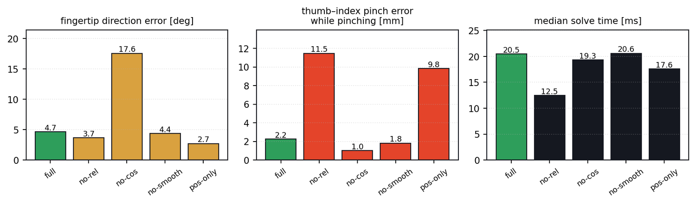
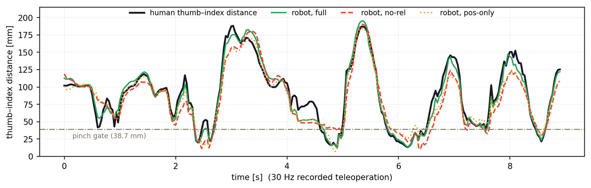
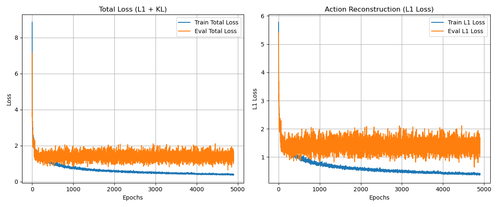

Dexterous manipulation ◆ Imitation learning ◆ Teleoperation ◆ New York University ◆ 2026
Get a grip: a geometric ACT policy for contact-rich, long-horizon dexterous pick-and-place. A human wearing an Apple Vision Pro drives a 23-DoF arm-and-hand in MuJoCo; the demonstrations train a chunked transformer that clears a table of fruit. The hard parts were not the network — they were getting a human hand onto a robot hand at all, and stopping the policy from freezing when it has to choose which apple to pick next.
The learned policy clearing the table: locate a fruit, reach, close the 16-DoF hand around it, place it on the plate, return to the home posture, and go again. No resets between objects.
A human index finger and an ORCA index finger do not have the same link lengths, the same joint axes, or the same number of joints. Mapping joint angle to joint angle is not just inaccurate, it is invalid — the resulting robot pose is not the pose the operator made.
So the retargeter does not match joint angles, and it does not really match absolute fingertip positions either. It matches geometry, in the palm frame, with three terms that pull in different directions:
The arm is solved separately — 7 DoF tracking the operator's wrist transform by SLSQP with λp = 500, λR = 200, λs = 2 — and its palm pose is then treated as a fixed base for the finger problem. Solving all 23 jointly at 30 Hz is both too slow and too full of local minima.
Below is the real thing: the ORCA hand's kinematics exported straight from the MuJoCo model, the released cost function, and 9 seconds of a real recorded Vision Pro hand trajectory. Turn a term off and watch what it was holding together. The solver here is coordinate descent rather than SLSQP because that is what runs at frame rate in a browser — on the same data it lands within 0.5° and 0.3 mm of the offline result.
Drag the hand to orbit it. The dashed red line is the thumb–index pair, the one the ×5 boost fires on.
The report asserts that the pairwise term is what preserves precision-pinch geometry. To check it I re-ran the released cost against the real ORCA MuJoCo model on 268 frames of recorded Vision Pro hand data, once per ablation, with the operator-to-robot palm frame solved by Kabsch alignment the way a teleoperation rig anchors at start-up.

| Cost configuration | fingertip direction [deg] | keypoint cos sim | pinch error, all frames [mm] | pinch error while pinching [mm] | aperture error [mm] | solve [ms] |
|---|---|---|---|---|---|---|
| full (released) | 4.66 | 0.989 | 7.10 | 2.24 | 13.5 | 20.5 |
| no pairwise (γrel=0) | 3.67 | 0.989 | 14.07 | 11.47 | 19.7 | 12.5 |
| no cosine (γcos=0) | 17.58 | 0.958 | 3.92 | 1.02 | 8.3 | 19.3 |
| no smoothness | 4.37 | 0.990 | 6.79 | 1.81 | 12.6 | 20.6 |
| naive keypoint L2 | 2.70 | 0.988 | 10.87 | 9.82 | 15.1 | 17.6 |
← swipe the table →

Dropping γrel takes the thumb–index gap error from 2.2 mm to 11.5 mm on the frames where the operator is actually pinching, and from 7.1 mm to 14.1 mm overall. Naive absolute-keypoint retargeting is barely better at 9.8 mm, despite having the best fingertip direction of any configuration — which is the point. Getting each fingertip pointing the right way says nothing about whether the fingers can meet.
This one I did not expect. Removing the cosine term makes pinch tracking better — 1.0 mm instead of 2.2 mm, and the hand aperture error drops from 13.5 mm to 8.3 mm — while fingertip direction error nearly quadruples, from 4.7° to 17.6°. The two terms are optimising different things over the same 20 joints, and γcos = 50 vs γrel = 100 is the compromise. A pinch-gated cosine weight, mirroring the boost that already exists on the pairwise term, would probably get both.
Solve times here (13–21 ms median) are slower than the 2–4 ms the report quotes, because this harness runs SLSQP with Python-side MuJoCo forward kinematics per cost evaluation rather than the tuned in-process planner loop. The ratios between configurations are the comparable quantity, not the absolute times.
With demonstrations in hand the policy is an Action Chunking Transformer: two ResNet-18 towers over the wrist and overhead RGB-D views, an MLP over the 23-DoF proprioceptive state, a CVAE latent, and a decoder that emits a 60-step (2.0 s) action chunk. At deployment the chunks overlap and are combined by temporal ensembling with τ = 10, so every executed action is an exponentially weighted average over every prediction still in flight.
Two implementation details mattered more than the architecture:

Clear one fruit and the policy is near-perfect. Clear four and it freezes. The reason is not capacity — it is that continuous teleoperation makes the dataset genuinely ambiguous. After a placement, two apples at near-equal distance produce identical images mapping to diverging action distributions, and a CVAE trained on that averages the modes instead of committing to one. The robot hovers between the two.
The fix is a protocol, not a loss. After securing an object the operator must return to a high-clearance home posture before reaching again. That makes the visual state at the start of every reach deterministic and unoccluded, which disentangles the action distribution the policy has to fit. It costs the operator a second per sub-task and it is the difference between a policy that clears a table and one that stalls on the second object.
| Training dataset | SR-1 | SR-2 | SR-3 | SR-4 |
|---|---|---|---|---|
| Unstructured (uncut) | 90 % | 22 % | 0 % | 0 % |
| State-Bottleneck | 96 % | 88 % | 23 % | 3 % |
| Δ | +6 pp | +66 pp | +23 pp | +3 pp |
Success rate over 50 independent rollouts per condition. SR-k is clearing k objects in sequence without a reset. The bottleneck protocol rescues SR-2 almost entirely; SR-3 and SR-4 stay hard, which is where residual RL on top of the frozen policy comes in.
The full stack — the Vision Pro streaming client, the three-process ZeroMQ teleoperation loop, the ACT and diffusion training, and the MuJoCo scenes — lives in a separate private repository. The public one is the part that reproduces from a clean checkout: the released cost function, the ORCA hand model, the recorded hand data, and the study above.
The browser playground loads assets/data/geodex_hand.json — the ORCA finger kinematics and 134 calibrated frames of the recorded trajectory, both produced by the exporters above.
GeoDEX was the final project for DS-GA 3001 at NYU, joint work with Yipeng Wang. The ORCA anthropomorphic hand is open-sourced by ETH Zürich; the arm is an xArm Lite 6. Everything is evaluated in MuJoCo — the sim-to-real gap is explicitly unaddressed, and is the first thing the next version has to fix.
The teleoperation stack, the policies and the report are from the project. The retargeting ablation, the frame calibration, the exporters and the browser playground on this page were built afterwards, on the released cost function and the recorded hand data.